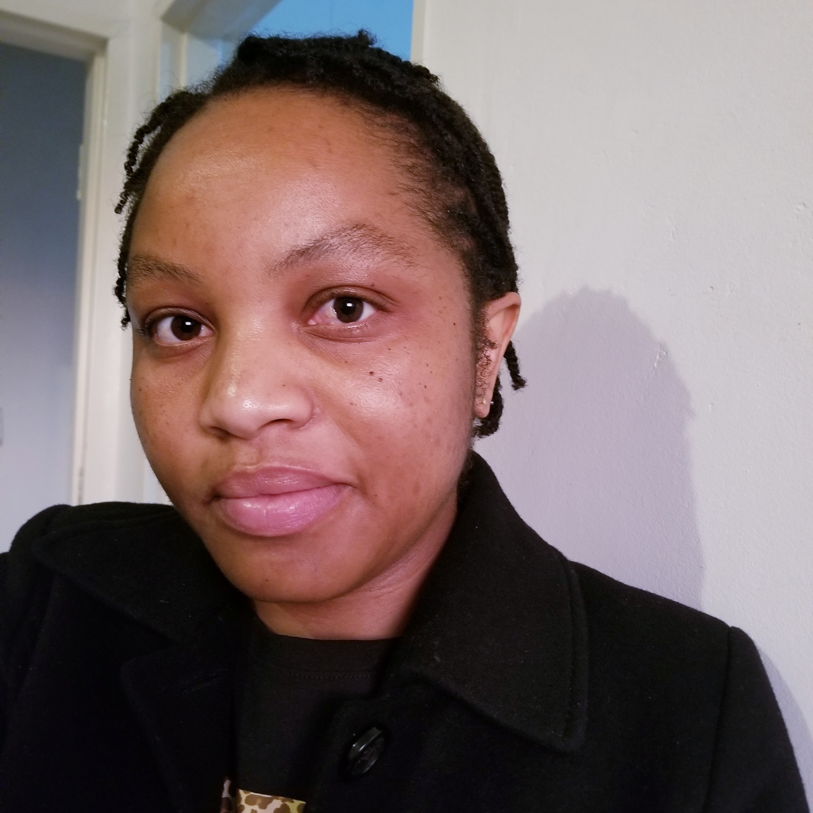

About me
Picture
My name is Linzile Mguni, and I reside at Bulawayo, Zimbabwe. Currently, I am working as a Personal Assistant to the Senior Partner at Malinga & Mpofu Legal Practitioners, where I manage various administrative tasks and support the legal team. As I navigate my professional journey, I’ve developed a keen interest in front-end engineering. I believe acquiring these technical skill will change my life and allow me to truly thrive
Video
Attached is a video featuring my siblings and cousins during a weekend outing. Family is the most important aspect of my life, and my siblings are truly my best friends. One of my proudest achievements is maintaining close relationships with each of them. We prioritize spending quality time together, even though we now lead separate lives. Our gatherings are filled with laughter and shared memories, and I cherish these moments deeply. Whether it’s celebrating special occasions or simply enjoying each other's company, these experiences strengthen our bond and remind me of the importance of family.